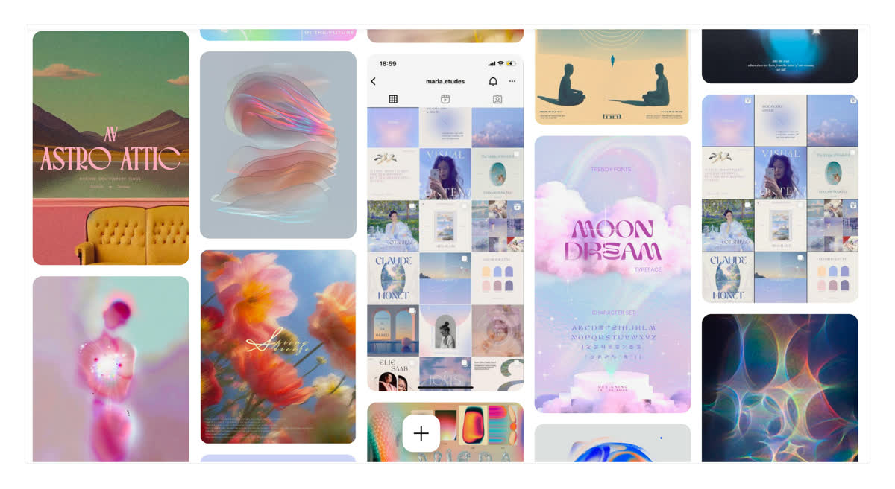
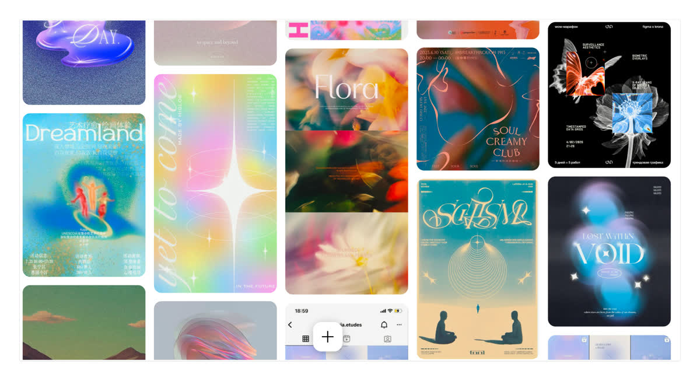
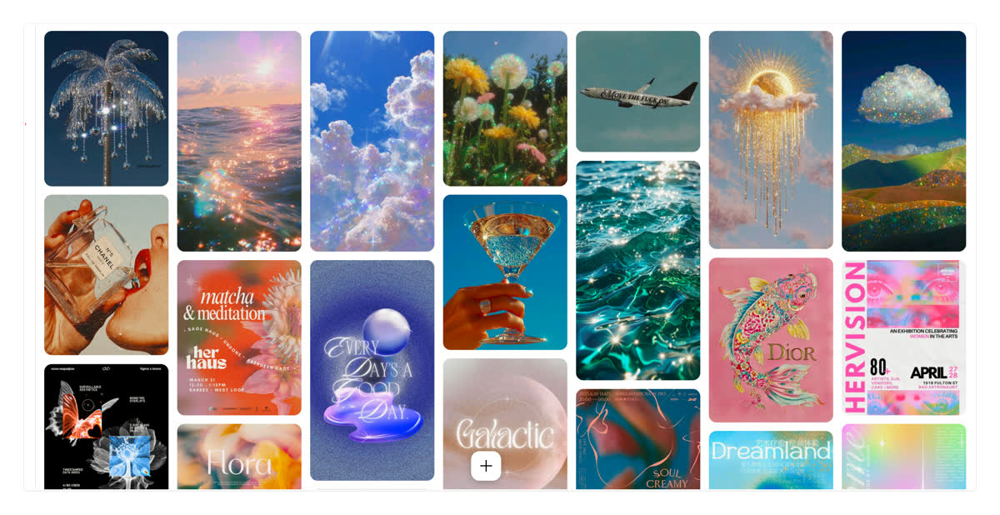
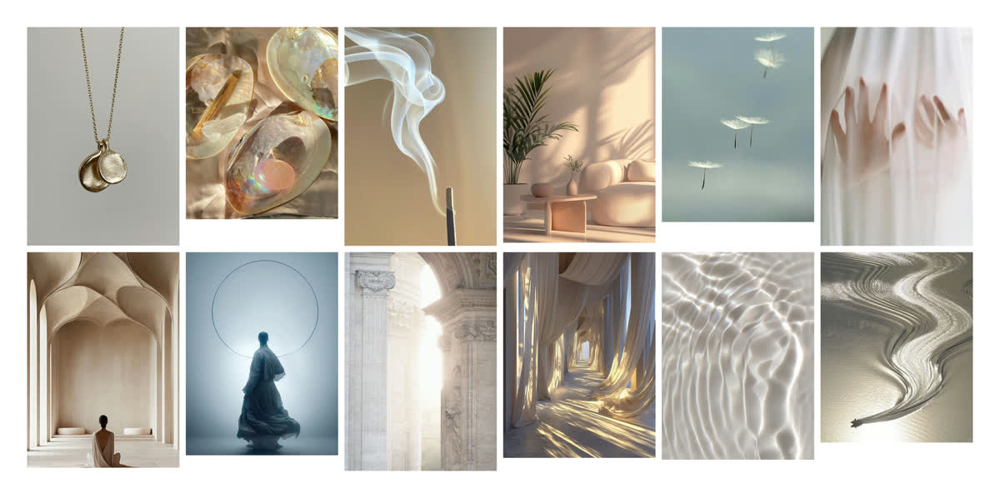

RISING · SCORPIO
You read a room before you enter it.
Lead with the slow reveal — mystery is your first language, not a flaw to fix.
Free reading
Натальна карта як персональна інструкція до дій — для соло-підприємців і контент-крейторів. Ліворуч — дерево всього проєкту по уроках. Нижче — повний візуальний рісерч Уроку 6.
Iryna's own references. One Neptunian / Pisces vibe at two saturations: a vivid iridescent dream (boards 1–3) and a muted warm dream (board 4). Shared thread: light, water, aura, translucency.




Reference is an input, not an output. Techniques pulled from real products — never cloning one — and a map of where the category goes wrong.
Profiled from a real screen recording — warmer and more playful than its reputation: a three-voice type system and hand-drawn squiggle dividers.
Two traps: Co-Star's cold grayscale, and the purple-cosmic starfield (Nebula, Moonly). Closest to us: warm document (Tolan), photographic warmth (Calm).
mymind, Cosmos, Vyrao — dreamy done expensively. Type leads, one contained glow, matte not glossy, negative space.
All luminous, all inside the moodboards — but different temperatures. Iryna chose Direction 02. Open the interactive chooser →
Pastel iridescent cloud-sky + fashion serif. The dreamiest — kept for the wow-moment.
One oil-on-water iridescent field + an aura ring behind the chart, on calm space.
Warm sacred light + ring-of-light halo. Kept for the report's keepsake warmth.
One iridescent aura holds the chart; everything else stays calm and readable. See it applied: Results · Glow Report · language stand.
Lead with the slow reveal — mystery is your first language, not a flaw to fix.
Atmosphere in the background · content on a frosted panel · one solid action · warm-light not purple-cosmic. The dream turns up behind the chart and down under the words.